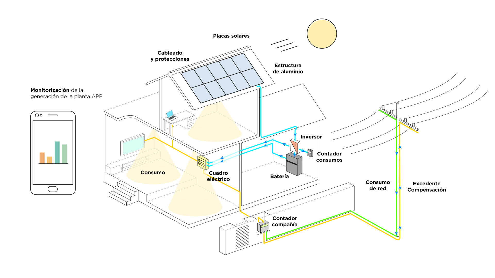

Partes de una instalación

Estructura de aluminio
Para instalar los paneles solares en tu tejado se deben colocar
unos soportes de aluminio anclado a la cubierta.
Paneles solares
Las placas solares son las piezas centrales de la instalación. Se
instalan generalmente en el tejado y se encargan de captar la luz
solar.
Inversor
El equipo inversor se encarga de transformar la energía captada
por las placas (corriente continua) en corriente alterna que es con
la que funcionan los electrodomésticos y la iluminación del hogar.
Cableado y protecciones
Su función es encargarse de que todo funcione de forma segura.
Sistema de monitorización
La aplicación registra la energía producida por la instalación y
el consumo del hogar.
Batería
Con las baterías puedes almacenar la energía que producen las
placas para que puedas consumirlas en otros momentos, como días de
menos producción o por la noche.